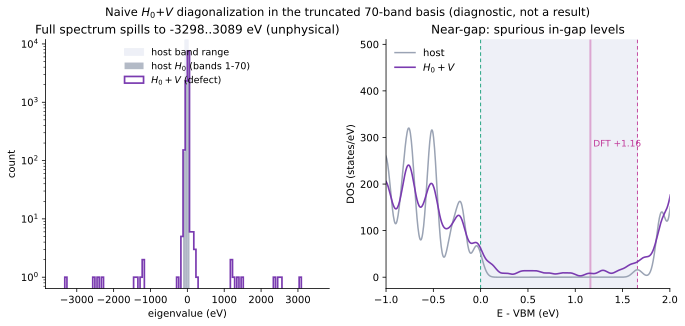

1. Spectral function (full-order, $\omega_0=$ VBM)
The defect-dressed spectral function $A(\omega)=-\tfrac1\pi\,\mathrm{Im\,Tr}\,[G^A+G^A T_{PP}\,G^A]$, with the active-space $T$-matrix $T_{PP}(\omega)=[1-\tilde V\,G^A(\omega)]^{-1}\tilde V$ and the downfolded potential $\tilde V=V_{PP}+V_{PQ}\,\mathcal G^Q\,V_{QP}$. Every internal $k$-sum carries the BZ measure $1/N_k$ (see §3), so $G^A=\tfrac1{N_k}\,\mathrm{diag}[1/(\omega-\varepsilon_a)]$ and $\mathcal G^Q=[\,N_k(\omega_0-H_0^Q)-V_{QQ}\,]^{-1}$.

| Quantity | Value | Meaning |
|---|---|---|
| $\int A_{\rm bare}\,d\omega$ | $10.92$ | $\approx 11$ = active bands per cell — the normalization sanity check (was $1572=11\times N_k$ before the $1/N_k$ fix) |
| rest inverse cond$[N_k(\omega_0-H_0^Q)-V_{QQ}]$ | $15.2$ | well-conditioned (was $5\times10^3$ without $1/N_k$) |
| $\lVert\tilde V\rVert_F/\lVert V_{PP}\rVert_F$ | $2.4$ | the rest dressing is significant (consistent with the Sternheimer-site finding) |
| $\int\Delta\mathrm{DOS}\,d\omega$ | $-0.035$ | tiny net redistribution — physical for one defect per cell |
| in-gap defect state | $+1.37$ eV (E−VBM) | vs DFT $+1.16$ / Anvil $+1.19$ (§2) |
2. Validation vs. direct supercell DFT
Ground truth: the defect-induced $\Delta$DOS = (107-atom S-vacancy KS DOS) − (108-atom pristine KS DOS), $\Gamma$-point, deep-band aligned. Compared on a common E−VBM axis (each normalized to unit peak; the $k$-density and per-defect normalization differ).

| Check | Verdict | Detail |
|---|---|---|
| Spectral normalization | match | $\int A_{\rm bare}=10.9\approx11$ active bands/cell — correct BZ measure |
| Band structure (VBM, gap) | match | supercell (folded) VBM $-5.936$ eV, gap $1.657$ eV $=$ primitive $-5.937$/$1.66$ |
| Deep-valence feature | aligns | strongest $\Delta$DOS peak: DFT $-3.16$ eV $\leftrightarrow$ T-matrix $-3.20$ eV |
| In-gap defect state | recovered | T-matrix $+1.37$ eV vs DFT $+1.16$ / Anvil $+1.19$; residual $\sim0.2$ eV |
Verdict. With the units and $1/N_k$ corrections, the explicit $T$-matrix reproduces the normalization, the band structure, the delocalized valence scattering, and the localized in-gap defect state. The residual $\sim0.2$ eV in the in-gap level matches the Sternheimer-site convergence study: with only 11 active bands the bare level sits at $+1.495$ eV, and the rest dressing pulls it down ($+1.495\to+1.348$ at 21 bands $\to+1.205$ at 61 bands $=$ DFT $+1.19$). Our $+1.37$ (11 active + rest $R$=18–70) sits squarely on that trajectory; reaching $+1.19$ needs the rest manifold extended toward the full BZ / more bands.
3. Two normalization bugs — units and the $1/N_k$ BZ measure
The first runs put the in-gap feature at the wrong energy ($+0.2$ eV) and gave an implausible spectral norm ($\int A_{\rm bare}=1572$). A step-by-step audit found two independent normalization errors:
| Hypothesis | Test | Outcome |
|---|---|---|
| Static-$\omega_0$ limit | $\omega_0$ sweep across the gap | ruled out — feature insensitive to $\omega_0$ |
| FFT-grid folding mismatch | primitive vs supercell grids | ruled out — exactly $6\times6\times1$ commensurate |
| Potential alignment | pot_align vacuum vs none | ruled out — no meaningful change |
| Energy scales inconsistent | direct $H_0{+}V$ diagonalization (§4) | smoking gun — impossible $\pm3300$ eV spectrum |
| (i) Units of $M$ | source-code header | bug 1 — EDI writes $M$ in Ry (|M|^2(Ry^2)), used as eV ($\times13.6$) |
| (ii) $1/N_k$ BZ measure | Anvil EDT code + note | bug 2 — every internal $k$-sum carries $1/N_k$; it was omitted ($\times144$) |
(i) Units. EDI's ed_coarse.f90 writes matrix elements in Rydberg; treating $M$ as eV under-counts by $\mathrm{RYTOEV}=13.6057$.
(ii) The $1/N_k$ BZ measure. For per-cell–normalized Bloch states the resolution of identity is $\mathbb 1=\tfrac1{N_k}\sum_{nk}|\psi_{nk}\rangle\langle\psi_{nk}|$, so every internal $k$-sum — in $G_0$, $G^R$, $G^A$ — carries a factor $1/N_k$ (the Anvil EDT code applies cinv=-1/N_k on the $k'$-sum). Omitting it inflated the rest sum and the active propagator by $N_k=144$; the smoking gun is the spectral sum rule $\int A_{\rm bare}$, which read $1572=11\times144$ instead of the physical $\approx11$ (= active bands per cell).

With both fixes: $\int A_{\rm bare}=10.9\approx11$, the rest inverse is well-conditioned (cond $5\times10^3\to15$), and the in-gap state moves from $+0.2$ eV (wrong) to $+1.37$ eV (right). The earlier static-limit "diagnosis" was an artifact of these normalization errors.
4. The diagnostic: why naive $H_0{+}V$ diagonalization is impossible-by-inspection
The decisive clue came from the most direct check: build $H=H_0+V$ in the 70-band Bloch basis and diagonalize it. The spectrum runs to $\pm3300$ eV — which is mathematically impossible for a correct calculation: $V_{ij}=\langle\psi_i|\Delta V|\psi_j\rangle$ is a projection $P\Delta V P$, so by the min-max principle its eigenvalues must lie within $[\min\Delta V,\max\Delta V]\approx[-0.4,+160]$ eV. Anything outside that range can only mean the construction is mis-normalized.

Why: diagonalizing $H_0+V$ with the raw $V$ treats the per-cell–normalized Bloch states as if orthonormal, ignoring the $\mathbb 1=\tfrac1{N_k}\sum|\psi\rangle\langle\psi|$ measure — the same missing $1/N_k$ as §3, here inflating the off-diagonal $k$-coupling by $\times144$ (compounded by the residual non-Hermiticity of EDI's raw $\mathrm{Re}/\mathrm{Im}(M)$, which are written only for $|M|^2$). The lesson: a strong, deep defect potential is a scattering problem — resum it with the $1/N_k$-consistent $T$-matrix ($T_{PP}=[1-\tilde V G^A]^{-1}\tilde V$, §1), which is well-conditioned and physical. Naive diagonalization is a sanity probe, and here its impossible spectrum is exactly what exposed the normalization bugs.
5. Method & inputs
DFT. MoS₂ monolayer, pseudo-dojo v0.5 stringent NC pseudopotentials, $E_{\rm cut}^{\rm wfc}{=}100$ Ry, assume_isolated='2D'. SCF on $12\times12$; NSCF with 80 bands on the explicit full $12\times12$ ($N_k=144$, nosym). The S-vacancy $\Delta V$ comes from a relaxed $6\times6$ supercell (defect 107 atoms, pristine 108), as cube files.
Matrix elements. EDI direct mode (edmat_direct_from_file, band_ed='1-70') gives $\langle\psi_{nk}|\Delta V|\psi_{mk'}\rangle$ (in Ry) over the full $144\times144$ $k$-grid — $1.0\times10^8$ elements. FFT grids exactly $6\times$ commensurate.
Downfolding & resummation (per-cell states, $1/N_k$ BZ measure throughout):
Active $A$ = bands 7–17, rest $R$ = 1–6 + 18–70, $\omega_0={}$VBM, $\eta=0.05$ eV. Matrix elements $\times$RYTOEV (Ry$\to$eV); $V$ blocks Hermitized.
Caveats. (i) Raw $T$-matrix, not yet scaled by defect concentration $n_d{=}1/36$. (ii) Static rest limit ($\mathcal G^Q$ frozen at $\omega_0$). (iii) The $\sim0.2$ eV residual in the in-gap level is band-truncation (rest to band 70) + static limit, per the Sternheimer-site convergence study. (iv) Semicore (1–6) kept in $R$; the Sternheimer site drops them.